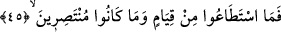
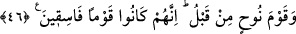

“Onları yıldırım yakaladı.” Rivâyete göre Sâlih (a.s.)’ın kavmi onun belirttiği
şekilde yüzlerin önce sararması, sonra kırmızıya, daha sonra da siyaha dönüşmesinin
alâmetlerini gördüklerinde onu öldürmeye teşebbüs ettiler. Fakat Allah onu Filistin
topraklarına göndererek kurtardı.
Dördüncü günün kuşluk vakti geldiğinde onlar biçilmeye hazır ekinler gibi azaba
boyun eğerek yok edildiler. “Zulmedenleri de o korkunç ses yakaladı...” (Hûd 11/67)
âyetinde bildirildiği gibi onlara Cibrîl (a.s.)’ın çığlığı ulaştı ve helâk oldular.
Sâ’ika’dan murad gerçek çığlığa benzemeyen bir sestir. Bir görüşe göre o, gökten inip
uğradığı her şeyi yakıp bitiren bir ateştir. Başka bir görüşe göre gökten inen ve içinde
tüm yıldırımların ve yeryüzündeki tüm sesler kadar bir gürültünün bulunduğu, helâk
edilecek o kavmin göğüslerinin içindeki kalplerini dahi paramparça eden bir çığlıktır.
Başka bir görüşe göre de “sâikâ” gökten gelen ve o kavmin tümünü yok eden hakîkî bir
yıldırım kıvılcımı; yıldırımdan oluşan bir ateş topudur.
“Onlar,” o yıldırıma “bakıp dururlarken,” onu gözleriyle gördükleri bir hal üzere
bulunurlarken yıldırım onları yakaladı. Gerçekten de yıldırım onlara gündüz gözüyle
gelmiş, onlar da ona bakakalmışlardı. Bu bakışlar sebebiyle, gelen şeyin hakîkî bir
yıldırım olduğu görüşü ağırlık kazanmaktadır. Zirâ bir şeyin gözle görülebilmesi için
onun ortaya çıkması gerekir. Oysa çığlık gözle görülemez, ancak kulaklarla duyulabilir.
Bununla birlikte yıldırımın, kendisiyle beraber Cibrîl (a.s.)’ın sesini taşımış olması da
ihtimal dâhilindedir.
Sâlih (a.s.)’ın kavminin bakakalmalarının, “intizar; yâni bekleme” mânâsında
olduğunu söyleyenler de vardır. Bu görüşe göre mânâ şöyledir: Bahsedilen üç gün
içinde renklerinin değişmesi sûretiyle gelecek azabın alâmetlerini görüp, tehdîd
olundukları bu azabı beklemeye başlarlar. Bazıları da “onlar, şaşkınlık içerisinde o
çığlığı duymuşlardır” şeklinde bir îzahta bulunmuşlardır.
45. Ayağa kalkacak güçleri kalmamış, yardım edenleri de olmamıştı.
Âyetin “Ayağa kalkacak güçleri kalmamış” kısmı “...yurtlarında çöküp kaldılar.”
(Hûd 11/94) mânâsındadır. Yâni yurtlarındaki yerlerine yapışıp kaldılar, kaçmak için
bir hareket ve kalkışa mâlik olamadılar. “Kıyâm; yâni ayağa kalkma” ifâdesi, “kuûd;
yâni oturup kalma”nın zıddıdır. “Yardım edenleri de olmamıştı.” Ne kendilerinden bu
hâli uzaklaştırabildiler, ne de başkasına yardım edebildiler.